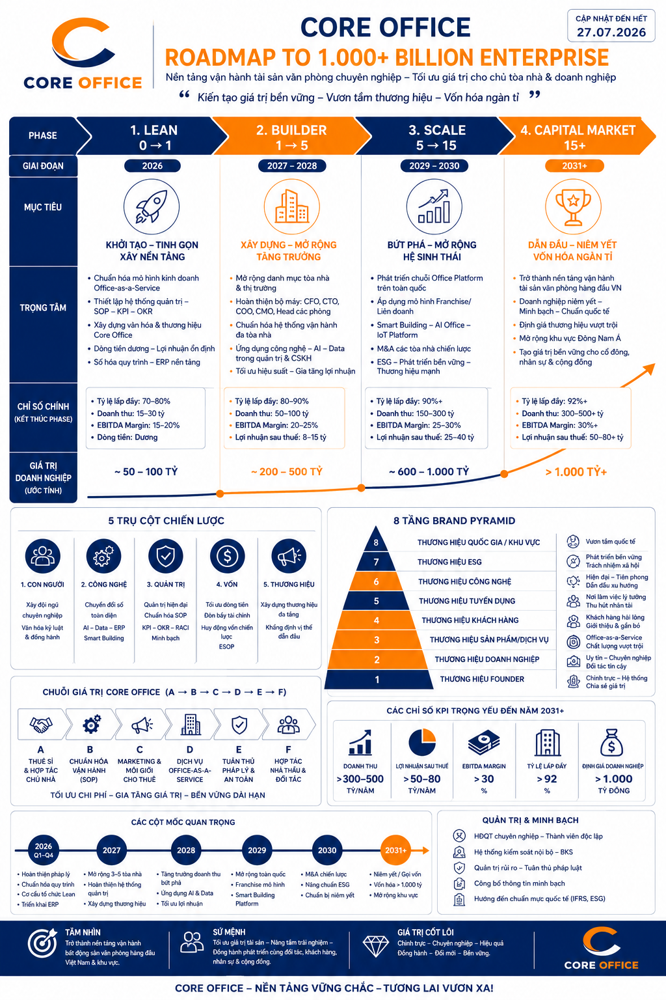
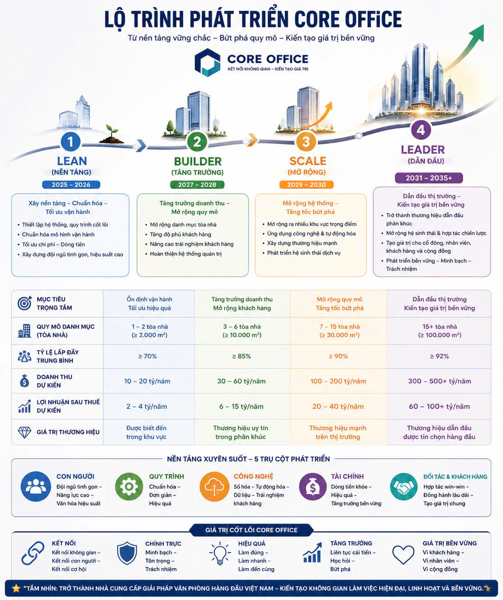

Core Office Operating Platform — nền tảng vận hành số cho mô hình văn phòng thuê sỉ – cho thuê lẻ
Hồ sơ năng lực và đề xuất hợp tác công nghệ do LAZINET biên soạn dựa trên nghiên cứu chuyên sâu mô hình kinh doanh, chiến lược phát triển và toàn bộ yêu cầu vận hành thực tế của Core Office. Tài liệu trình bày rõ phạm vi, lộ trình triển khai và cam kết dịch vụ cho vai trò đối tác công nghệ của LAZINET.
Về tài liệu này
Cách tiếp cận của LAZINET
LAZINET đã nghiên cứu toàn diện hồ sơ chiến lược, cơ cấu quản trị và yêu cầu vận hành mà Core Office cung cấp, đối chiếu nhiều nguồn để đảm bảo thấu hiểu đúng và đủ mô hình kinh doanh trước khi đề xuất giải pháp. Với tư cách đối tác cung cấp dịch vụ công nghệ, LAZINET xây dựng tài liệu này làm cơ sở trao đổi minh bạch về phạm vi, lộ trình và cam kết hợp tác.
Hai nội dung chính
(1) Hồ sơ hiểu biết của LAZINET về mô hình kinh doanh, chiến lược và cơ cấu tổ chức Core Office (mục 02–09) — minh chứng năng lực nắm bắt
nghiệp vụ nhanh và chính xác.
(2) Đề xuất hoạch định công nghệ toàn diện — kiến trúc nền tảng, lộ trình triển khai, phạm vi tính năng và cam kết dịch vụ cho vai trò đối
tác công nghệ của LAZINET (mục 10–17, đánh dấu ★).
02 · Mô hình kinh doanh & Chuỗi giá trị
Core Office vận hành theo mô hình "thuê sỉ — chuẩn hóa — cho thuê lẻ" (master-lease / sub-lease) đối với các tòa nhà văn phòng hạng B/C.
Cơ chế vận hành cốt lõi
Core Office (đóng vai Bên B) thuê sỉ nguyên tòa nhà văn phòng hạng B/C có diện tích sử dụng NET tối thiểu 2.000 m² từ chủ nhà (Bên A), sau đó chuẩn hóa vận hành (SOP, PCCC, nội thất, thương hiệu) và cho thuê lẻ lại cho các doanh nghiệp nhỏ với diện tích linh hoạt 20–200 m²+. Lợi nhuận cốt lõi đến từ chênh lệch giữa giá thuê sỉ trả Bên A và tổng giá cho thuê lẻ thu từ Bên D, sau khi trừ chi phí vận hành và hoa hồng môi giới (Bên C). Bên E (chính quyền) giám sát toàn chuỗi về pháp lý, PCCC, thuế, an ninh.
Chuỗi 5 bên trong mô hình
| Ký hiệu | Vai trò | Quan hệ với Core Office |
|---|---|---|
| Bên A | Chủ nhà cho thuê (landlord) | Core Office thuê sỉ nguyên tòa từ Bên A, trả tiền thuê + đặt cọc 3–6 tháng |
| Bên B | Core Office — thuê sỉ, vận hành, cho thuê lẻ | Trung tâm mô hình — mua sỉ không gian, chuẩn hóa, bán lẻ không gian |
| Bên C | Môi giới (broker) | Đưa khách thuê đến, nhận hoa hồng từ Core Office |
| Bên D | Khách thuê lẻ (sub-tenant) | Thuê lại diện tích nhỏ (20–200m²+), trả tiền thuê hằng tháng |
| Bên E | Cơ quan chức năng / chính quyền | PCCC, công an, thuế, xây dựng, môi trường, lao động — giám sát tuân thủ |
Chuỗi giá trị 5 giai đoạn (Value Chain)
Giá trị tạo ra cho từng bên
Ổn định dòng tiền, giảm rủi ro, tăng hiệu suất khai thác tài sản
Chênh lệch giá + giá trị thương hiệu + tài sản vận hành
Nguồn sản phẩm ổn định, hoa hồng rõ ràng, minh bạch
Mặt bằng chuẩn hóa, vận hành chuyên nghiệp, chi phí hợp lý
Hoạt động minh bạch, tuân thủ pháp luật
Mô hình chuỗi giá trị Porter
Hoạt động chính (Primary Activities)
- Inbound logistics — nhận tài sản từ Bên A
- Operations — chuẩn hóa, vận hành
- Marketing & Sales — phân phối, môi giới
- Service — chăm sóc khách thuê
Hoạt động hỗ trợ (Support Activities)
- Tài chính – kế toán
- Pháp lý & quan hệ cơ quan nhà nước (Bên E)
- Công nghệ quản lý TECH
- Hệ thống SOP & thương hiệu
03 · Mối quan tâm của 5 bên liên quan (A–E)
Mỗi bên trong chuỗi giá trị có nhu cầu minh bạch thông tin khác nhau — đây chính là nguồn gốc trực tiếp của phần lớn yêu cầu tính năng phần mềm trong mục Hoạch định Công nghệ (mục 10–17).
- Bảo toàn vốn: tài sản không bị chiếm dụng, không tranh chấp pháp lý, hao mòn hợp lý
- Checklist bàn giao đầu vào/đầu ra minh bạch TECH
- An ninh – camera rõ ràng TECH, dòng tiền thanh toán đúng hạn
- Tuân thủ PCCC – xây dựng – thuế, không bị liên đới trách nhiệm pháp lý
- Chất lượng khách thuê lại — cần quy trình sàng lọc TECH
- Nhật ký vận hành số hóa TECH, minh bạch tài chính (có thể là dashboard cho Bên A xem)
- Biên lợi nhuận & dòng tiền: chênh lệch giá thuê sỉ vs cho thuê lẻ, thời gian hòa vốn
- Công suất khai thác (Occupancy) — ngưỡng an toàn ban đầu 60%
- Hệ thống quản lý vận hành — "có phần mềm quản lý? có CRM?" TECH
- Chất lượng khách thuê — không chỉ lấp đầy mà "lấp đầy bằng ai"
- 5 rủi ro lớn nhất: lấp đầy chậm, chủ nhà chấm dứt hợp đồng, pháp lý/PCCC, khách không trả tiền, suy thoái thị trường
- Chính sách hoa hồng rõ ràng – minh bạch – thanh toán đúng hạn
- Phản hồi trong 24h TECH — SLA số hóa
- Diện tích trống cập nhật real-time TECH để tự tin đưa khách
- Bảo vệ quyền môi giới — cơ chế bảo lưu khách 30–60 ngày, CRM ghi nhận lead TECH
- Không bị cạnh tranh trực tiếp/"bẻ kèo" bởi chính Core Office
- Diện tích linh hoạt, layout tối ưu, khả năng mở rộng/thu hẹp
- Giá thuê minh bạch, có thể xuất hóa đơn TECH, không phí ẩn
- Phản hồi nhanh khi có sự cố TECH — hệ thống ticket/yêu cầu
- An ninh, kiểm soát ra vào, camera TECH, PCCC định kỳ
- Thông điệp mục tiêu: "Thuê ở đây an toàn hơn tự thuê nhà nhỏ lẻ"
- PCCC — trọng yếu nhất: hồ sơ thẩm duyệt, nhật ký bảo trì hệ thống TECH
- Pháp lý công trình: giấy phép, hoàn công, đúng công năng
- Thuế: hóa đơn điện tử đúng quy định TECH — mô hình thuê sỉ–cho thuê lẻ dễ bị giám sát doanh thu tiền mặt
- An ninh trật tự: khai báo tạm trú, không ngành nghề nhạy cảm
- Môi trường – năng lượng: rác thải, điện mặt trời áp mái
- Lưu trữ hồ sơ điện tử TECH — biến Bên E từ rủi ro thành "lá chắn pháp lý"
04 · Chiến lược & Lộ trình phát triển
Tầm nhìn, sứ mệnh, giá trị cốt lõi và lộ trình tăng trưởng 4 giai đoạn của Core Office (bản chính thức, cập nhật đến hết 27/07/2026).
Tầm nhìn
Trở thành nền tảng vận hành tài sản bất động sản văn phòng hàng đầu Việt Nam & khu vực — hệ sinh thái đầu tư, quản lý, vận hành, khai thác văn phòng cho thuê chuyên nghiệp.
Giá trị cốt lõi — CORE
Connection (Kết nối) · Optimization (Tối ưu) · Reliability (Tin cậy) · Efficiency (Hiệu quả). Sáu giá trị mở rộng: Chính trực, Chuyên nghiệp, Hiệu quả, Đồng hành, Kỷ luật, Phát triển bền vững.
Lộ trình 4 giai đoạn (Infographic chính thức — cập nhật 27/07/2026)

Nguồn: Infographic Lộ trình phát triển Core Office, cập nhật 27/07/2026.
Diễn giải lộ trình theo góc nhìn 4 trụ cột nền tảng

Phiên bản trình bày bổ sung, nhấn mạnh 5 trụ cột phát triển xuyên suốt (Con người – Quy trình – Công nghệ – Tài chính – Đối tác & Khách hàng) và giá trị cốt lõi Core Office qua từng giai đoạn.
Giá trị doanh nghiệp ước tính theo giai đoạn
5 trụ cột chiến lược
0010/0013)
đặt mục tiêu Scale 2030 = 20.000–30.000m²; bản trình HĐQT chính thức (28/05/2026, 0025) chốt lại chi tiết hơn: Lean = 2 tòa/4.000m²,
Builder = 6 tòa/12.000m², Scale = 15 tòa/30.000m²; infographic chính thức (27/07/2026, hiển thị ở trên) là bản mới nhất và đầy đủ nhất, được
dùng làm chuẩn xuyên suốt tài liệu này khi có sai khác giữa các bản.
05 · Phân tích khả thi & Rủi ro
Tổng hợp đánh giá 5M-1T (Menpower–Money–Methods–Machineries–Material–Time), điều kiện Cần & Đủ, và 4 nhóm rủi ro ngành với giải pháp quản trị.
Các con số định lượng chính (Feasibility)
| Hạng mục | Ngưỡng / mục tiêu |
|---|---|
| Diện tích tối thiểu mỗi tòa | NET ≥ 2.000 m² (hạng B, C); không thuê > 3.000 m² trong năm đầu |
| Đặt cọc cho Bên A | 3–6 tháng tiền thuê |
| Vốn vận hành ban đầu | Đủ cho 6–9 tháng; dự phòng dòng tiền tối thiểu 9 tháng (điều kiện CẦN) |
| Lấp đầy tối thiểu 6 tháng đầu | ≥ 60% |
| Chi phí cải tạo | Kiểm soát dưới 15% giá trị thuê năm đầu (điều kiện ĐỦ) |
| Phân khúc diện tích khách thuê lẻ | 20–200 m²+ (xu hướng phổ biến: 50–200 m²) |
| Mục tiêu lấp đầy theo Phase | Lean ≥85% · Builder ≥90% · 2030 >92%+ |
| Mục tiêu quy mô 26/02/2030 | > 20 tòa nhà, > 20.000 m² sàn thu tiền |
4 nhóm rủi ro ngành nhận diện
1. Rủi ro pháp lý
PCCC kiểm tra → xử phạt/đình chỉ; công an kiểm tra lưu trú/kinh doanh; thanh tra xây dựng; truy cứu trách nhiệm người đại diện pháp luật nếu có yếu tố "đồng thuận vi phạm".
2. Rủi ro tài chính
Đình chỉ → mất doanh thu, mất cọc, đền bù khách thuê. Nếu tòa dừng hoạt động 3–6 tháng → dòng tiền âm mạnh do đòn bẩy cao của mô hình thuê sỉ.
3. Rủi ro thương hiệu
Một sự cố PCCC → mất uy tín với Chủ nhà, Môi giới, Khách thuê, Ngân hàng — nghiêm trọng khi hướng tới scale 5–10+ tòa nhà.
4. Rủi ro cá nhân người đại diện pháp luật
Có thể bị xử phạt, triệu tập, ảnh hưởng hồ sơ cá nhân — đặc biệt nhạy cảm khi phát triển hệ thống lớn.
Bộ tiêu chí pháp lý đầu vào (Legal Filter Framework)
Giải pháp quản trị rủi ro chính
- Chuyển rủi ro pháp lý về phía Bên A: hợp đồng thuê sỉ yêu cầu Bên A cam kết đủ điều kiện pháp lý/PCCC; nếu bị đình chỉ do lỗi Bên A → giảm tiền thuê/đền bù/quyền chấm dứt hợp đồng.
- Tách rủi ro cá nhân khỏi vận hành: thuê CEO chuyên nghiệp làm đại diện pháp luật, hoặc mô hình 1 công ty vận hành (OpCo) + 1 công ty sở hữu hợp đồng (HoldCo).
- Chuẩn hóa PCCC như lợi thế cạnh tranh: biến "An toàn – Chuẩn hóa – Minh bạch" thành USP thương hiệu.
- Tăng trưởng thông minh: Lean trước – Scale sau; 2026–2027 chỉ 1–2 tòa pháp lý sạch, xây thương hiệu chuẩn trước khi mở rộng.
06 · Cấp quản trị: ĐHĐCĐ → HĐQT → BCV/BKS → BGĐ
Cơ cấu quản trị công ty theo mô hình cổ phần chuẩn, thiết kế riêng cho từng giai đoạn LEAN → BUILDER → SCALE.
Vai trò & cơ chế từng cấp
Đại hội đồng Cổ đông (ĐHĐCĐ)
Cơ quan quyết định cao nhất: thông qua chiến lược, ngân sách, tăng/giảm vốn, ESOP, bầu HĐQT/BKS, BCTC, phân phối lợi nhuận. Áp dụng mô hình cổ đông 2 tầng: tầng pháp luật (sáng lập/phổ thông/ưu đãi) và tầng chiến lược gồm 8 nhóm (Sáng lập, Điều hành, Đồng hành, Chiến lược, Đầu tư tài chính, ESOP, Gia đình, Cộng đồng).
Hội đồng Quản trị (HĐQT)
7 nhóm nhiệm vụ: quản trị chiến lược, cổ đông, tổ chức, nhân sự cấp cao, tài chính, rủi ro, văn hóa. Phase LEAN: 3–5 thành viên (khuyến nghị 5: 1 Chủ tịch chuyên trách + 2 chuyên trách + 1 đại diện cổ đông + 1 danh dự). Họp tuần/tháng/quý theo cấp độ nội dung.
Ban Cố vấn (BCV)
Cơ quan tư vấn độc lập, không điều hành. 10 nhóm checklist Lean (A–J): chiến lược, tư vấn HĐQT/CEO, tổ chức, tài chính, đầu tư, nhân sự, phát triển quan hệ, rủi ro. Một Cố vấn Dự án chuyên trách ERP, AI, chuyển đổi số TECH được đề xuất. Quy mô Lean: 5–7 thành viên.
Ban Kiểm soát (BKS)
Giám sát độc lập HĐQT, BGĐ, tài chính, rủi ro, tuân thủ. Checklist 13 mảng gồm cả "Kiểm tra CNTT" TECH (Server, Email, Website, Domain, Backup, Phần mềm, Phân quyền) và "Kiểm tra Quản trị dữ liệu" TECH (backup, phân quyền, nhật ký truy cập, bảo mật, Cloud). Đây là bằng chứng trực tiếp cho nhu cầu audit log/RBAC trong nền tảng công nghệ.
Ban Giám đốc (BGĐ)
Cấp điều hành trực tiếp dưới HĐQT. Họp giao ban tuần gồm 12 mục, trong đó có riêng mục "Công nghệ thông tin – Chuyển đổi số" TECH. KPI trọng yếu bao gồm "tỷ lệ số hóa quy trình đạt mục tiêu theo từng phase" TECH — xác nhận số hóa là mục tiêu quản trị chính thức, được đo lường, không phải tùy chọn.
07 · 5 phòng ban chuyên môn
Mỗi phòng ban đều có Điều lệ + Checklist công việc riêng (tài liệu B12, 23/07/2026) — nguồn trực tiếp để suy ra yêu cầu tính năng phần mềm.
Hành chính – Nhân sự (HCNS)
Quản trị vòng đời nhân sự đầy đủ (hoạch định → tuyển dụng → onboarding → lương/3P → đào tạo → đánh giá) kiêm Văn phòng HĐQT: hồ sơ cổ đông, ESOP, kho biểu mẫu quản trị. Đặc biệt: "Quản trị hệ thống GPT AI nội bộ và cơ sở tri thức doanh nghiệp" TECH do chính HCNS phụ trách.
Nguồn: B12/0013 · Quy mô Lean: 1–2 người ("HRGA")
Tài chính – Kế toán (TCKT)
Quản trị dòng tiền hằng ngày, dự báo 7 ngày/13 tuần/3-6-12 tháng, thu–chi–công nợ, báo cáo HĐQT. Đặc thù: theo dõi doanh thu/cọc theo khách thuê–tầng–diện tích — nghiệp vụ mà phần mềm kế toán chuẩn (MISA/FAST) không hỗ trợ sẵn TECH.
Nguồn: B12/0014, 0020 · Quy mô Lean: 3–5 người
Quản lý Vận hành (QLVH) Feature-dense nhất
Property + Facility Management + Tenant Experience: kiểm tra hiện trạng hằng ngày, bảo trì định kỳ, quản lý khách thuê trọn vòng đời (bàn giao→ở→trả), an ninh/camera, PCCC, quản lý bãi xe/khách ra vào, quản lý nhà thầu, quản lý năng lượng.
Nguồn: B12/0015 · Nguồn chính cho module PropTech (mục 11)
Kinh doanh – Marketing – PTDA CRM cốt lõi
"Growth Engine" — Supply Acquisition → Brand Building → Lead Generation → Sales Conversion → Customer Lifetime Value. Lead đa kênh (FB/Google/Website/Zalo/TikTok/LinkedIn/Referral/Walk-in/Hotline), pipeline nguồn cung tòa nhà riêng biệt pipeline bán hàng, quản lý môi giới.
Nguồn: B12/0016 · Quy mô Lean: ~5 người
Công nghệ – Chuyển đổi số (CNTT-CĐS) ★ Phòng ban liên quan trực tiếp đến LAZINET
Không chỉ là bộ phận IT mà là "đơn vị kiến tạo năng lực số" cho toàn doanh nghiệp — vận hành trên nền tảng số, ra quyết định dựa trên dữ liệu, chuẩn hóa & tự động hóa, ứng dụng AI, đảm bảo an toàn thông tin. Phục vụ tất cả các đơn vị: ĐHĐCĐ, HĐQT, BKS, BCV, BGĐ và 4 phòng ban còn lại.
Nguồn: B12/0017 (Điều lệ phòng), 0024 (Trưởng phòng) — xem phân tích đầy đủ tại mục 10 "Vai trò LAZINET".
KPI cốt lõi CNTT-CĐS (dùng làm cơ sở SLA của LAZINET, xem mục 16)
08 · Đội ngũ lãnh đạo & Bối cảnh công nghệ hiện tại
Core Office được dẫn dắt bởi đội ngũ sáng lập có nền tảng đa ngành, trong đó có nhân sự với kinh nghiệm công nghệ trực tiếp — một lợi thế giúp quá trình hợp tác triển khai nền tảng số diễn ra thuận lợi và hiệu quả.
Quy mô phát triển theo lộ trình
Đội ngũ sáng lập có nền tảng công nghệ trực tiếp
Một điểm thuận lợi quan trọng cho quá trình hợp tác: trong đội ngũ sáng lập Core Office đã có nhân sự với chuyên môn công nghệ sâu, giúp việc trao đổi yêu cầu nghiệp vụ — kỹ thuật diễn ra hiệu quả và rút ngắn thời gian thống nhất giải pháp.
Phụ trách CNTT – Chuyển đổi số
Hơn 10 năm kinh nghiệm xây dựng hệ thống CNTT, KPI, quản trị hiệu suất, chuyển đổi số doanh nghiệp — hiện đồng thời điều hành một công ty tư vấn CNTT & nhân sự. Đầu mối công nghệ nội bộ chính thức của Core Office.
Nền tảng công nghệ & tài chính doanh nghiệp
Chuyên môn Điện tử Viễn thông và Computer Science (đào tạo tại nước ngoài), từng sáng lập một studio công nghệ đã chuyển nhượng thành công, hiện điều hành doanh nghiệp công nghệ riêng. Tại Core Office: xây dựng nền tảng công nghệ, hệ thống tài chính doanh nghiệp và hệ thống quản lý vận hành tài sản.
Hiện trạng công nghệ — điểm khởi đầu của dự án
09 · Danh mục tài liệu nguồn
Phân loại và hệ thống hóa toàn bộ 76 tài liệu gốc từ 3 thư mục inputs/@B11, inputs/@B12, inputs/mr-chinh.
Quan hệ giữa các lô hồ sơ
📁 @B11
Lô hồ sơ đầu tiên ("Business Unit 11"), phát hành 26/02 – 16/06/2026. Trọng tâm: hình thành ý tưởng, chiến lược/khả thi/rủi ro, chuỗi giá trị, 5 bên liên quan, vốn góp LEAN, bàn giao công việc.
📁 @B12
Lô hồ sơ thứ hai ("Business Unit 12"), phát hành 13/04 – 28/07/2026 — kế thừa trực tiếp từ B11 (mục lục B12 nhúng cả danh mục B11 làm phụ lục tham chiếu). Trọng tâm: pháp lý công ty, đề xuất hợp tác, điều lệ + checklist từng cấp quản trị/phòng ban.
📁 mr-chinh
2 file trùng 100% (MD5) với B11 (Value Chain, Định hướng chiến lược) + 2 ảnh infographic lộ trình phát triển (1 bản nháp sớm hơn, 1 bản trùng khớp hoàn toàn với B12/0029 — bản chính thức).
@Danh sách nhân sự và @THÔNG BÁO — các hồ sơ
dùng chung được đồng bộ ở cả hai lô.
Danh mục đầy đủ theo chủ đề
A. Nền tảng & Thuật ngữ
| # | Tài liệu | Lô | Ngày |
|---|---|---|---|
| 1 | Danh mục hồ sơ đã phát hành | B11 | 26/02/2026 |
| 2 | Diễn giải từ viết tắt B11 | B11 | 26/02/2026 |
| 3 | Danh mục hồ sơ đã phát hành (B12, kèm phụ lục B11) | B12 | 01/07/2026 |
B. Chiến lược & Mô hình kinh doanh
| # | Tài liệu | Lô | Ngày |
|---|---|---|---|
| 4 | Đánh giá hiện trạng B11 | B11 | 26/02/2026 |
| 5 | Chuỗi giá trị – Value Chain của Core Office | B11 = mr-chinh | 26/02/2026 |
| 6 | Định hướng chiến lược Core Office | B11 = mr-chinh | 26/02/2026 |
| 7 | Phân tích tính khả thi dự án B11 | B11 | 26/02/2026 |
| 8 | Phân tích rủi ro ngành của Core Office và giải pháp quản trị | B11 | 26/02/2026 |
| 9 | Checklist công việc Giai đoạn 2026–2030 | B11 | 26/02/2026 |
| 10 | Dự thảo Chiến lược trình HĐQT (LuuTG) | B11 | 28/05/2026 |
| 11 | Dự thảo Hệ thống sơ đồ quản trị trình HĐQT (LuuTG) | B11 | 09/06/2026 |
| 12 | Framework tổng thể triển khai một công ty | B11 | 16/06/2026 |
| 13 | Xây dựng một công ty có vốn hóa trên 1.000 tỷ đồng Core Office | B12 | 26/07/2026 |
| 14 | Infographic Lộ trình phát triển Core Office (bản chính thức) | B12 = mr-chinh | 28/07/2026 |
| 15 | Infographic Lộ trình phát triển Core Office (bản nháp sớm hơn) | mr-chinh | trước 27/07 |
C. Các bên liên quan (Stakeholder Analysis A–E)
| # | Tài liệu | Lô | Ngày |
|---|---|---|---|
| 16 | Mối quan tâm của Bên A – Chủ nhà cho thuê | B11 | 26/02/2026 |
| 17 | Mối quan tâm cốt lõi của Bên B – Bên thuê sỉ/cho thuê lẻ | B11 | 26/02/2026 |
| 18 | Mối quan tâm chiến lược của Bên C – Bên Môi giới | B11 | 26/02/2026 |
| 19 | Mối quan tâm cốt lõi của Bên D – Khách thuê | B11 | 26/02/2026 |
| 20 | Mối quan tâm cốt lõi của Bên E – Chính quyền | B11 | 26/02/2026 |
D. Quản trị công ty & Điều lệ các cấp
| # | Tài liệu | Lô | Ngày |
|---|---|---|---|
| 21 | Đại hội đồng cổ đông Core Office | B12 | 23/07/2026 |
| 22 | Hội đồng quản trị Core Office | B12 | 23/07/2026 |
| 23 | Ban Cố vấn Core Office | B12 | 23/07/2026 |
| 24 | Ban Kiểm soát Core Office | B12 | 23/07/2026 |
| 25 | Ban Giám đốc (BGĐ) Core Office | B12 | 23/07/2026 |
| 27 | Thống nhất nguyên tắc phê duyệt các nội dung kinh doanh B11-MGL | B11 | 16/03/2026 |
E. 5 Phòng ban chuyên môn (Điều lệ + Checklist)
| # | Tài liệu | Lô | Ngày |
|---|---|---|---|
| 28 | Phòng Hành chính – Nhân sự (HCNS) | B12 | 23/07/2026 |
| 29 | Phòng Tài chính – Kế toán (TCKT) | B12 | 23/07/2026 |
| 30 | Phòng Quản lý Vận hành (QLVH) | B12 | 23/07/2026 |
| 31 | Phòng Kinh doanh – Marketing – Phát triển Dự án | B12 | 23/07/2026 |
| 32 | Phòng Công nghệ – Chuyển đổi số (CNTT-CĐS) ★ | B12 | 23/07/2026 |
F. Chân dung nhân sự lãnh đạo (Checklist công việc cá nhân)
| # | Tài liệu | Lô | Ngày |
|---|---|---|---|
| 33 | Trưởng phòng Hành chính nhân sự | B12 | 25/07/2026 |
| 34 | Kế toán tổng hợp | B12 | 25/07/2026 |
| 35 | Trưởng phòng Tài chính – Kế toán | B12 | 25/07/2026 |
| 36 | Trưởng phòng Quản lý Vận hành | B12 | 25/07/2026 |
| 37 | Trưởng phòng Kinh doanh – Marketing – PTDA | B12 | 25/07/2026 |
| 38 | Trưởng phòng Công nghệ – Chuyển đổi số ★ | B12 | 25/07/2026 |
| 39 | Giám đốc Điều hành (CEO) | B12 | 25/07/2026 |
| 40 | Chủ tịch Hội đồng quản trị | B12 | 25/07/2026 |
| 41 | Trưởng Ban Kiểm soát | B12 | 25/07/2026 |
| 42 | Trưởng ban cố vấn | B12 | 25/07/2026 |
G. Tuyển dụng (Hồ sơ "Chân dung" ứng viên lý tưởng)
| # | Tài liệu | Lô | Ngày |
|---|---|---|---|
| 43–49 | Chân dung CEO, Chủ tịch HĐQT, TP HCNS, TP Marketing-Sales, TP QLVH, TP TCKT, Trợ lý HĐQT Đa Nhiệm | B12/Tuyển dụng | 02/06/2026 |
| 50 | Mẫu thông tin Nhà tuyển dụng & Ứng viên | B12/Tuyển dụng | 23/04/2026 |
H. Cổ đông, Vốn góp, ESOP, Nhân sự dự án
| # | Tài liệu | Lô | Ngày |
|---|---|---|---|
| 51 | Mẫu giới thiệu cổ đông B11 | B11 | 09/03/2026 |
| 52 | Cổ đông sáng lập B11 | B11 | 09/03/2026 |
| 53 | Keypersons B11 ESOP | B11 | 02/06/2026 |
| 54 | Các hình thức cổ đông và sở hữu vốn | B11 | 09/03/2026 |
| 55 | Kế hoạch góp vốn giai đoạn LEAN (xlsx) | B11 | 20/03/2026 |
| 56 | Thông báo kế hoạch góp vốn 90 ngày | B11 | 20/03/2026 |
| 57 | Danh sách cổ đông sáng lập Core Office | B11 = B12 | 18/03/2026 |
| 58 | Danh sách nhân sự tham gia dự án | B11 = B12 | 10/03/2026 |
| 59 | Phân tích hiệu quả mô hình hợp tác Lưu – Học | B11 | 26/02/2026 |
| 60–61 | Phân tích tình trạng & Chia sẻ cá nhân LuuTG | B11 | 28/02/2026 |
I. Pháp lý – Ủy quyền – Chuyển nhượng · J. Đề xuất hợp tác · K. Chính sách nội bộ khác
| # | Tài liệu | Lô | Ngày |
|---|---|---|---|
| 62 | HĐ mượn nhà làm VP – Core Office | B12 | 13/04/2026 |
| 63–64 | Giấy ủy quyền (GUQ Ngân-Chính; Ngân-Lưu + CCCD 2 bên) | B12 | 01–15/07/2026 |
| 65 | Hướng dẫn sang nhượng cổ phần nội bộ | B12 | 13/07/2026 |
| 66–68 | 3 Đề xuất hợp tác (Bảo, Chính, Phong) — TV HĐQT/TBKS | B12 | 16/07/2026 |
| 69 | Xây dựng hệ thống lương 3P Core Office | B12 | 16/07/2026 |
| 70 | Điều chỉnh chính sách hợp tác môi giới 160 | B11/@KD-MKT | 23/05/2026 |
| 71–72 | Thư mời tham gia cộng đồng khách thuê / môi giới 54.31 PQ | B11 | 11/03/2026 |
| 73 | Thông báo họp giao ban tuần (mẫu) | B11 = B12 | 23/04/2026 |
| 74–76 | Hướng dẫn + Biên bản + Phụ lục Excel kiểm soát bàn giao | B11 | 03/03/2026 |
Ghi chú: một số file PDF (CCCD cá nhân, hợp đồng ủy quyền scan tay) là ảnh scan không trích xuất được văn bản — chỉ liệt kê tên hồ sơ, không trích nội dung cá nhân nhạy cảm (CMND/CCCD, số tài khoản ngân hàng, thông tin sức khỏe cá nhân) vào tài liệu tổng hợp này dù có xuất hiện trong hồ sơ gốc, vì không cần thiết cho hai mục tiêu của tài liệu (hệ thống hóa hồ sơ dự án + hoạch định công nghệ).
10 · Vai trò LAZINET & Nguyên tắc kiến trúc
Core Office Operating Platform (COP) — nền tảng vận hành số cho mô hình "Thuê sỉ – Chuẩn hóa – Cho thuê lẻ", được thiết kế dựa trên rà soát toàn bộ 76 tài liệu nội bộ, không phải đề xuất chung chung.
Vai trò LAZINET — xác nhận trực tiếp từ tài liệu nội bộ Core Office
Đây chính là vai trò LAZINET được đề nghị đảm nhận — xác nhận bằng chính tài liệu nội bộ của Core Office, không phải suy diễn. Tài liệu cùng mục cũng nêu rõ hai đơn vị thuê ngoài khác cần cho hệ sinh thái công nghệ: Chuyên gia AI (chatbot, AI Sales/Marketing/HR/Finance/Building Management) và Đơn vị An toàn thông tin (PenTest, SOC, giám sát tấn công) — LAZINET có thể mở rộng phạm vi hợp tác sang các mảng này ở Phase 2/3 nếu Phase 1 triển khai tốt.
Nguyên tắc kiến trúc: "Build the differentiator, buy the commodity"
✅ MUA (SaaS có sẵn) — Core Office tự trả phí, LAZINET chỉ tích hợp API nếu cần
- Microsoft 365 / Google Workspace
- Phần mềm kế toán (MISA/FAST — chính vai trò "Kế toán tổng hợp" yêu cầu kỹ năng cụ thể phần mềm này)
- Chữ ký số (VNPT/FPT/Viettel-CA)
- HRM/chấm công phổ thông (Base.vn/1Office/MISA HRM)
- SMS Brandname / Zalo OA (nền tảng có sẵn)
🔨 XÂY RIÊNG (trọng tâm ngân sách LAZINET)
Toàn bộ nghiệp vụ đặc thù mô hình "thuê sỉ – chuẩn hóa – cho thuê lẻ" mà không SaaS quốc tế nào có sẵn phù hợp thị trường Việt Nam: CRM đa đối tượng (A/C/D), quản lý hợp đồng thuê sỉ + cho thuê lại, vận hành tòa nhà (PropTech), tài chính vận hành theo tòa nhà/tầng/khách thuê, dashboard hợp nhất đa cấp — đây là "Core Office Operating Platform" (COP).
Thiết kế dữ liệu multi-property ngay từ đầu
Dù Phase 1 chỉ vận hành 1–2 tòa nhà, cấu trúc dữ liệu (database schema) sẽ được thiết kế sẵn sàng cho nhiều tòa nhà ngay từ đầu — rẻ để làm đúng từ đầu, đắt để tái cấu trúc (refactor) sau. Điều này khớp trực tiếp với chính lộ trình Core Office: BUILDER 2027–2028 sẽ có 6 tòa nhà/12.000m²+, và tầm nhìn dài hạn (B12/0008) định vị công ty là nền tảng PropTech/Office-as-a-Service đa tòa nhà, không phải công cụ quản lý 1 tòa nhà đơn lẻ.
11 · Kiến trúc 8 module — Core Office Operating Platform
Mỗi module truy vết trực tiếp về nhu cầu nghiệp vụ thực tế của Core Office — không phải danh sách tính năng chung chung.
CRM & Kênh bán đa đối tượng
Lead đa kênh (Facebook/Google/Website/Zalo/TikTok/LinkedIn/Referral/Walk-in/Hotline) hợp nhất; pipeline khách thuê (Bên D); pipeline nguồn cung tòa nhà (Bên A); hồ sơ & bảo vệ lead môi giới (Bên C, 30–60 ngày); báo giá & hợp đồng mẫu số hóa.
Nguồn: Phòng KD-MKT-PTDA (0016) — ưu tiên #1, lặp lại ở hầu hết tài liệu chiến lược B11
Hợp đồng, Pháp lý số & Thanh toán
Kho hợp đồng thuê sỉ (A) + cho thuê lại (D), phụ lục, nhắc gia hạn tự động; tích hợp e-Sign; hóa đơn điện tử; thu tiền cọc/tiền thuê; nhắc thanh toán tự động.
Nguồn: Phòng TCKT (0014); mối quan tâm Bên D (0006); yêu cầu Bên E (0007)
Sơ đồ mặt bằng & Vận hành tòa nhà (PropTech)
Floor plan trực quan realtime; kiểm tra hiện trạng số (checklist+ảnh); CMMS bảo trì; vòng đời khách thuê (bàn giao→ở→trả); ticketing sự cố có SLA; bãi xe/khách ra vào (lớp phần mềm); booking phòng họp; theo dõi PCCC.
Nguồn: Phòng QLVH (0015) — nguồn feature-dense nhất cho PropTech
Tài chính vận hành theo tòa nhà
Công nợ khách thuê & aging report; thu Bên D/trả Bên A; dòng tiền theo tòa nhà/tầng; dự báo dòng tiền (7 ngày/13 tuần/3-6-12 tháng); workflow phê duyệt chi theo hạn mức; đồng bộ 2 chiều với phần mềm kế toán.
Nguồn: Phòng TCKT (0014); Kế toán tổng hợp (0020)
Website công ty + Landing Page dự án
Website chuẩn SEO, cập nhật tin/dự án; landing page riêng từng tòa nhà; form lead tự động đổ vào CRM.
Nguồn: Checklist thương hiệu & Machineries (0013); Phòng KD-MKT-PTDA (0016)
Dashboard & BI đa cấp
Board Dashboard (HĐQT); Executive Dashboard (CEO/BGĐ); Dashboard tài chính (theo tòa/tầng/khách thuê); Dashboard vận hành (SLA/uptime/chi phí); Dashboard kinh doanh (lead/pipeline/CPL/CAC/ROAS); Dashboard CNTT (uptime/MTTR/backup).
Xuất hiện lặp lại ở MỌI phòng ban khảo sát (0008–0018)
Trung tâm Thông báo & Tự động hóa
Zalo OA/Email/SMS; nhắc gia hạn/thanh toán tự động; workflow e-Approval cơ bản (thay quy trình duyệt qua Zalo/SMS/ký giấy hiện tại); chatbot CSKH kịch bản dựng sẵn.
Nguồn: nguyên tắc phê duyệt B11-MGL hiện 100% thủ công (0023); cộng đồng Zalo (@KD-MKT)
Nền tảng, Bảo mật & Quản trị hệ thống
RBAC chi tiết theo từng vai trò; audit log/nhật ký truy cập; backup & DR; hạ tầng cloud; MFA/firewall/password policy.
Nguồn: yêu cầu kiểm tra CNTT của Ban Kiểm soát (0012, mục 13)
12 · Roadmap Công nghệ 5 giai đoạn
Khớp trực tiếp với khung LEAN → BUILDER → SCALE → CAPITAL MARKET của chính Core Office (mục 04) — không phải một roadmap công nghệ tách rời.
| Giai đoạn | Thời gian | Mục tiêu công nghệ | Ngân sách |
|---|---|---|---|
| Phase 0 Khởi tạo | 2–3 tuần đầu | Khảo sát nghiệp vụ, kiến trúc hệ thống, wireframe UX, chọn stack, dựng hạ tầng, thống nhất phạm vi MVP bằng văn bản (MoSCoW) | Nằm trong ngân sách Phase 1 |
| Phase 1 MVP LEAN | 2026 | 8 module COP ở mức MVP cho quy mô 1–2 tòa nhà — đúng tinh thần "Số hóa quy trình – ERP nền tảng" mà Core Office đặt cho LEAN | 300.000.000 đ (đã thống nhất) |
| Phase 2 BUILDER | 2027–2028 | Mobile/PWA khách thuê & môi giới; AI CSKH/chatbot sinh ngôn ngữ; tích hợp ERP/kế toán sâu hơn; mở rộng đa tòa nhà (6 tòa/12.000m²+); Data warehouse cơ bản; IoT/BMS software layer; e-invoice đầy đủ | Đề xuất riêng ~450–700 triệu đ (ước tính sơ bộ) |
| Phase 3 SCALE | 2029–2030 | Smart Building/AI Office/IoT Platform; kiến trúc multi-tenant SaaS phục vụ nhân rộng 15 tòa nhà; tự động hóa nâng cao; Trung tâm điều hành số | Đề xuất riêng theo giai đoạn |
| Phase 4 CAPITAL MARKET | 2031+ | Audit trail cấp đầu tư; dashboard nhà đầu tư; bảo mật ISO 27001; sẵn sàng minh bạch phục vụ niêm yết/gọi vốn | Đề xuất riêng theo giai đoạn |
Đồng bộ với mốc cột Core Office (để LAZINET canh tiến độ bàn giao)
13 · Tính năng Phase 1 — Phân loại MoSCoW
Cơ sở cho "Phụ lục Phạm vi Công việc" (Statement of Work) đính kèm hợp đồng — nên xác nhận bằng văn bản với Core Office trước khi triển khai.
🔴 MUST HAVE
- CRM: lead đa kênh, pipeline Lead→Hợp đồng
- Hồ sơ khách thuê, môi giới (bảo vệ nguồn lead), chủ tòa nhà
- Kho hợp đồng số (thuê sỉ + cho thuê lại) + phụ lục
- Nhắc hạn/gia hạn hợp đồng tự động
- Sơ đồ mặt bằng trực quan theo trạng thái phòng
- Hồ sơ bàn giao số (checklist + ảnh), biên bản trả mặt bằng
- Ticketing sự cố khách thuê có SLA
- Theo dõi thu tiền thuê/cọc theo khách thuê–tầng–diện tích
- Công nợ & báo cáo tuổi nợ (Aging Report)
- Dòng tiền theo tòa nhà + xuất dữ liệu đồng bộ kế toán
- Website công ty + 1 landing page dự án, SEO cơ bản
- Board Dashboard (occupancy, doanh thu, dòng tiền, công nợ)
- Dashboard vận hành (ticket/SLA) & kinh doanh (lead/pipeline)
- Nhắc thanh toán/gia hạn qua Email + Zalo OA
- RBAC theo vai trò, audit log cơ bản, backup tự động hàng ngày
🟠 SHOULD HAVE
- e-Sign tích hợp qua API nhà cung cấp sẵn có
- Chatbot kịch bản dựng sẵn (rule-based) cho CSKH/website
- Booking phòng họp đơn giản
- Cổng xem hạn chế cho Bên A — báo cáo dòng tiền/occupancy
Làm nếu còn dư địa, không phải điều kiện nghiệm thu.
🟢 COULD HAVE
- Mobile app / PWA riêng cho khách thuê và môi giới
- AI CRM/Marketing/CSKH sinh ngôn ngữ tự do
- Tích hợp ERP kế toán 2 chiều đầy đủ (MISA/FAST API), HRM đầy đủ
- CMMS bảo trì đầy đủ (lịch tự động, quản lý nhà thầu, nghiệm thu số)
- Data warehouse/BI nâng cao, dự báo dòng tiền bằng AI
- UI quản lý tập trung đa tòa nhà
- Cổng riêng đầy đủ cho môi giới tự tra cứu hoa hồng
Ghi rõ vào đề xuất Phase 2 — KHÔNG cam kết trong 300 triệu.
⚪ WON'T HAVE (loại trừ rõ)
- Mọi thiết bị phần cứng tích hợp: camera, đầu đọc thẻ, máy chấm công, cổng kiểm soát ra vào, cảm biến IoT — khách hàng tự mua
- Dịch vụ mua ngoài: SMS gateway, e-Sign, e-invoice, SaaS (MISA/HRM...) — khách hàng tự trả phí thuê bao
LAZINET chỉ đảm nhận lớp phần mềm kết nối/tích hợp.
14 · Kế hoạch triển khai (WBS) — Phase 1
10–12 tuần triển khai, đội hình 4–5 người làm song song.
15 · Đầu tư & Chi phí
Cơ cấu đầu tư rõ ràng, minh bạch cho Phase 1 và giai đoạn vận hành sau bàn giao.
Phase 1 — Triển khai nền tảng
Trọn gói một lần — bàn giao đầy đủ 8 module theo phạm vi mục 13 (danh sách MUST/SHOULD HAVE), trong ~10–12 tuần triển khai.
- Khảo sát nghiệp vụ, thiết kế kiến trúc & giao diện
- Phát triển đầy đủ 8 module: CRM, Hợp đồng, PropTech, Tài chính, Website, Dashboard, Thông báo, Bảo mật
- Kiểm thử, đào tạo người dùng, tài liệu vận hành
- Hỗ trợ sát sao 30 ngày đầu sau bàn giao
Vận hành & Hỗ trợ hàng tháng
Bắt đầu sau bàn giao — bao gồm toàn bộ hạ tầng vận hành và gói hỗ trợ kỹ thuật theo cam kết SLA (xem mục 16).
- Hạ tầng cloud, backup, bảo mật, giám sát vận hành 24/7
- Đội ngũ kỹ thuật túc trực xử lý sự cố theo SLA
- Bảo trì, cập nhật nhỏ, báo cáo vận hành CNTT hàng tháng
- Tư vấn cải tiến liên tục theo nhu cầu phát sinh
Phạm vi mở rộng theo lộ trình (tham khảo, chưa cam kết)
Khi Core Office bước vào giai đoạn BUILDER (mở rộng danh mục tòa nhà, ứng dụng AI/Data sâu hơn, phát triển ứng dụng di động), LAZINET sẽ trình bày đề xuất đầu tư riêng cho Phase 2, xây dựng trên nền tảng đã triển khai ở Phase 1 — không phát sinh chi phí xây dựng lại từ đầu.
16 · KPI nghiệm thu & Cam kết SLA
Chỉ số dùng để hai bên xác nhận hoàn thành Phase 1, và cam kết SLA vận hành hàng tháng — khớp đúng KPI nội bộ mà chính Core Office đặt ra cho Phòng CNTT-CĐS.
KPI nghiệm thu theo module (Phase 1)
| Module | Tiêu chí nghiệm thu | Ngưỡng đạt |
|---|---|---|
| CRM & Kênh bán | Toàn bộ lead từ Website/Zalo tự động vào CRM; pipeline theo dõi được từng bước | 100% lead có nguồn gốc rõ ràng |
| Hợp đồng & Thanh toán | 100% hợp đồng hiệu lực được số hóa, có nhắc hạn tự động | 0 hợp đồng quá hạn không được nhắc |
| PropTech vận hành | Ticket sự cố có SLA, trạng thái mặt bằng cập nhật đúng thực tế | SLA phản hồi ticket ≤ cấu hình |
| Tài chính vận hành | Công nợ & dòng tiền theo tòa nhà khớp sổ kế toán | Sai lệch đối chiếu ≤ 1% |
| Website & Landing page | Vận hành ổn định, đạt điểm SEO cơ bản, form lead hoạt động | Tốc độ tải ≤ 3 giây, 0 lỗi 500 |
| Dashboard & BI | 3 dashboard chính phản ánh đúng dữ liệu thực tế | Độ trễ dữ liệu ≤ 24 giờ |
| Thông báo tự động | Nhắc thanh toán/gia hạn gửi đúng thời điểm cấu hình | ≥ 98% thông báo gửi đúng hạn |
| Nền tảng & Bảo mật | RBAC đúng vai trò, audit log đầy đủ, backup chạy hàng ngày | 100% backup thành công |
Cam kết SLA vận hành hàng tháng
Các chỉ số dưới đây được xây dựng khớp với đúng chuẩn quản trị CNTT nội bộ mà Core Office đã tự đặt ra cho Phòng Công nghệ – Chuyển đổi số — LAZINET cam kết mức SLA này ngay từ ngày đầu vận hành, đảm bảo nền tảng đáp ứng đúng tiêu chuẩn quản trị mà Core Office theo đuổi.
Báo cáo vận hành CNTT hàng tháng
LAZINET chủ động cung cấp: uptime, danh sách sự cố & thời gian xử lý, chi phí vận hành, đề xuất cải tiến — đúng định dạng báo cáo mà Trưởng phòng CNTT-CĐS nội bộ Core Office phải nộp hàng tháng theo checklist của họ. Đây là cách LAZINET "may đo" báo cáo vừa khít với quy trình quản trị sẵn có của khách hàng, thay vì áp một mẫu báo cáo chung chung.
17 · Vì sao đây là mức đầu tư hợp lý & khả thi
Tầm nhìn của Core Office — nền tảng PropTech đa tòa nhà hướng tới vốn hóa nghìn tỷ — là một mục tiêu lớn và đầy tham vọng. LAZINET đánh giá đây là hành trình nhiều thách thức nhưng hoàn toàn khả thi, với điều kiện triển khai đúng lộ trình theo từng giai đoạn.
1. Tham vọng lớn — nhưng chia giai đoạn đúng cách sẽ khả thi
Tầm nhìn PropTech đa tòa nhà, ứng dụng AI toàn diện, mở rộng hệ sinh thái dịch vụ là mục tiêu dài hạn hoàn toàn xứng đáng theo đuổi. LAZINET đề xuất tiếp cận theo đúng tinh thần Lean → Builder → Scale mà Core Office đã đặt ra: Phase 1 tập trung vào nhóm tính năng tạo giá trị vận hành ngay lập tức (mục 13), các hạng mục nâng cao hơn (AI sâu, ứng dụng di động, ERP tích hợp toàn diện) được đưa vào lộ trình Phase 2 khi nền tảng đã chứng minh hiệu quả thực tế.
2. Phạm vi được xác định rõ ràng ngay từ đầu
Bảng phân loại MoSCoW (mục 13) xác lập rõ những gì được đảm bảo bàn giao trong Phase 1 và những gì thuộc lộ trình mở rộng — giúp hai bên có cùng kỳ vọng ngay từ đầu, tránh phát sinh hiểu lầm trong quá trình triển khai.
3. Kiến trúc sẵn sàng mở rộng ngay từ Phase 1
Dữ liệu được thiết kế theo mô hình đa tòa nhà (multi-property) ngay từ đầu dù Phase 1 chỉ vận hành 1–2 tòa nhà — khi Core Office bước vào giai đoạn BUILDER với nhiều tòa nhà hơn, nền tảng mở rộng tự nhiên mà không cần tái cấu trúc.
4. Đồng hành dài hạn, không phải bàn giao một lần
Gói vận hành hàng tháng (mục 15) đi kèm cam kết SLA cụ thể (mục 16), giúp Core Office luôn có một đội ngũ kỹ thuật đồng hành liên tục — nền tảng cho quan hệ đối tác công nghệ chiến lược lâu dài, không chỉ dừng ở một dự án bàn giao rồi kết thúc.
Vì sao LAZINET đủ năng lực thực hiện
Toàn bộ kiến trúc 8 module (mục 11) được xây dựng dựa trên nghiên cứu trực tiếp checklist công việc thực tế của từng phòng ban Core Office — không phải một giải pháp phần mềm chung chung áp dụng máy móc.
"Build the differentiator, buy the commodity" (mục 10) — tập trung nguồn lực đúng chỗ tạo khác biệt thực sự, không lãng phí ngân sách xây lại những gì thị trường đã có sẵn tốt.
SLA vận hành (mục 16) không phải lời hứa suông — được xây dựng khớp trực tiếp với chính chuẩn quản trị CNTT nội bộ mà Core Office đã đặt ra cho mình.
Rủi ro triển khai & giải pháp
| Rủi ro | Giải pháp |
|---|---|
| Phạm vi mở rộng ngoài dự kiến trong quá trình triển khai | Phụ lục Phạm vi Công việc kèm bảng MoSCoW (mục 13) thống nhất ngay từ đầu; yêu cầu phát sinh ngoài phạm vi được báo giá bổ sung minh bạch |
| Dữ liệu hiện tại phân tán trong Zalo/Excel/giấy tờ — cần thời gian chuẩn hóa khi di trú | Dành riêng hạng mục khảo sát & lên kế hoạch nhập liệu ngay từ Tuần 1–2, phối hợp trực tiếp với các phòng ban liên quan |
| Phụ thuộc API bên thứ ba (Zalo OA, e-Sign, SMS) có thể thay đổi chính sách/giá theo thời gian | Thiết kế lớp tích hợp (integration layer) tách biệt, dễ thay thế nhà cung cấp mà không ảnh hưởng lõi hệ thống |
| Nhân sự quen quy trình thủ công, cần thời gian thích nghi hệ thống mới | Kiểm thử nghiệm thu (UAT) sớm cùng người dùng thật (mục 14), đào tạo đầy đủ khi bàn giao, hỗ trợ sát sao 30 ngày đầu |
| Yêu cầu minh bạch, có thể truy vết mọi thao tác trên hệ thống (phục vụ giám sát Ban Kiểm soát) | Module Nền tảng & Bảo mật (phân quyền chi tiết + audit log) triển khai đầy đủ ngay từ Phase 1 |
18 · Phụ lục: Thuật ngữ & Nguồn tra cứu
Bảng thuật ngữ tổng hợp từ tài liệu "Bản chuẩn hóa từ viết tắt B11" (26/02/2026), rút gọn các mục liên quan trực tiếp đến quản trị và công nghệ.
| Viết tắt | Diễn giải |
|---|---|
| HĐQT / BOD | Hội đồng Quản trị (Board of Directors) |
| CT HĐQT | Chủ tịch Hội đồng Quản trị |
| BKS | Ban Kiểm soát (Board of Supervisors) |
| HCNS | Hành chính – Nhân sự |
| TCKT | Tài chính – Kế toán |
| QLVH | Quản lý Vận hành |
| KD-MKT-PTDA | Kinh doanh – Marketing – Phát triển Dự án |
| CNTT-CĐS | Công nghệ Thông tin – Chuyển đổi số |
| ESOP | Employee Stock Ownership Plan — cổ phần cho nhân sự chủ chốt, vesting theo thời gian/KPI |
| SOP | Standard Operating Procedure — quy trình vận hành chuẩn |
| KPI / OKR | Key Performance Indicator / Objectives & Key Results |
| RACI | Responsible – Accountable – Consulted – Informed (ma trận phân công) |
| Viết tắt | Diễn giải |
|---|---|
| CRM | Customer Relationship Management — quản lý quan hệ khách hàng |
| ERP | Enterprise Resource Planning — hoạch định nguồn lực doanh nghiệp |
| HRM | Human Resource Management — quản trị nhân sự |
| DMS | Document Management System — hệ thống quản lý văn bản |
| BMS | Building Management System — hệ thống quản lý tòa nhà |
| CMMS | Computerized Maintenance Management System — quản lý bảo trì bằng máy tính |
| SLA | Service Level Agreement — cam kết mức độ dịch vụ |
| MTTR | Mean Time To Repair — thời gian trung bình khắc phục sự cố |
| PCCC | Phòng cháy chữa cháy |
| NLA / GFA | Net Leasable Area / Gross Floor Area — diện tích cho thuê thuần / tổng diện tích sàn |
| MoSCoW | Must / Should / Could / Won't have — khung phân loại ưu tiên tính năng |
| WBS | Work Breakdown Structure — cấu trúc phân rã công việc |
Phương pháp thực hiện
- Nghiên cứu toàn diện hồ sơ chiến lược, quản trị và vận hành do Core Office cung cấp, đối chiếu nhiều nguồn để đảm bảo thấu hiểu chính xác.
- Phân tích chuyên sâu yêu cầu công nghệ — ưu tiên đặc biệt các tài liệu liên quan trực tiếp đến định hướng CNTT – Chuyển đổi số, cùng mọi đề cập về phần mềm/hệ thống/dữ liệu/AI/số hóa xuất hiện xuyên suốt hồ sơ.
- Đối chiếu chéo nhu cầu công nghệ từ nhiều góc nhìn độc lập: mối quan tâm của các bên liên quan trong chuỗi giá trị, điều lệ/checklist từng cấp quản trị và phòng ban, mô tả công việc từng vai trò — đảm bảo danh sách tính năng module không bỏ sót yêu cầu quan trọng.
- Xây dựng roadmap, kiến trúc module, kế hoạch triển khai và đề xuất đầu tư dựa trên toàn bộ dữ liệu đã tổng hợp.